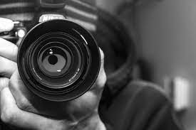
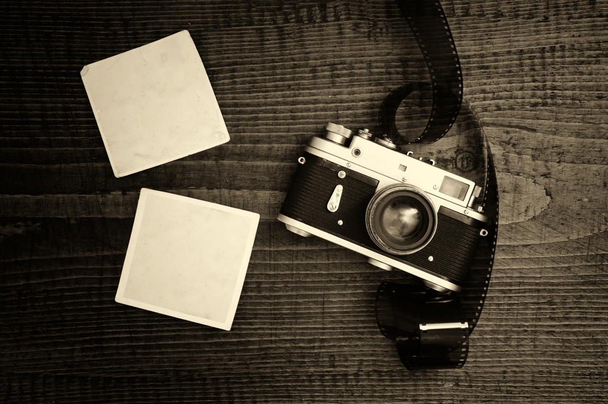

La fotografía es un proceso físico mediante el cual se captan imágenes de momentos muy específicos. El proceso incluye necesariamente una cámara, que es el instrumento que permite tomar las imágenes deseadas; existe una gran diversidad de cámaras para hacer fotografías: fabricadas por uno mismo, manuales y digitales.
En la fotografía hay dos actores importantes: el fotógrafo y el observador (quien ve la foto). Ambos actores reflexionan sobre la imagen y expresan sus impresiones sobre ella: el fotógrafo trabaja con las sensaciones y emociones que le producen las personas, paisajes, objetos y demás cosas que ha decidido fotografiar. El observador trata de identificar estos elementos, pero también los interpreta utilizando sus propias experiencias, emociones y pensamientos.
Un primer ejemplo de estas imágenes lo encuentras en las obras del fotógrafo Hernán Díaz, nacido en Ibagué y que trabajó para diversos periódicos y revistas. Esta foto es un retrato del artista Enrique Grau, tomada en su estudio y rodeado de objetos significativos de su vida y su obra.
También poder observar esta fotografía del artista Abdu Eljaiek, nacido en Calamar, Magdalena. La especial relación del artista con los paisajes y personas de la costa Caribe, se expresa en este retrato de una niña junto a una canoa. La actitud de la niña con la pose serena y la mirada fija al observador nos permite imaginarnos su personalidad.